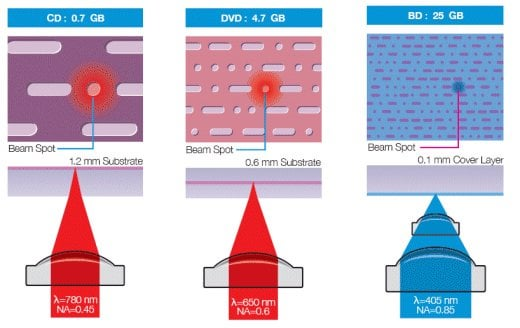

Technology Overview / 技术概述
- Optical storage devices use laser light to read and write data to the disk surface. / 光学存储设备使用激光读写磁盘表面数据。
- The laser interacts with a surface coated with a thin layer of metal alloy or a light-sensitive organic dye. / 激光与涂有金属合金或光敏有机染料薄层的磁盘表面相互作用。
Physical Structure / 物理结构
Spiral Track / 螺旋轨道
- Data is stored in a single, continuous spiral track that runs from the center to the outer edge as the disk spins. / 数据存储在从中心到外边缘的单一连续螺旋轨道中，磁盘旋转时向外运行。
- This track is divided into sectors for direct data access. / 此轨道被划分为扇区以便直接访问数据。
- The outer part of the spinning disk moves faster than the inner part. / 旋转光盘的外部比内部运行得更快。
Pits and Lands / 凹坑和平台
- Pits are depressions in the track surface; Lands are the flat areas between them. / 凹坑是轨道表面的凹陷；平台是凹坑之间的平坦区域。
- Data is stored as transitions between pits and lands. / 数据存储为凹坑和平台之间的转换。
- Laser reflection changes at pit-land boundaries, representing binary data (0s and 1s). / 激光在凹坑-平台边界处反射变化，这些变化代表二进制数据(0和1)。

Diagram of Pits and Lands on a Spiral Track
螺旋轨道上的凹坑与平台示意图
Technology Comparison / 技术对比
CD (Compact Disc)
- Laser / 激光: Red / 红色
- Wavelength / 波长: 780 nm
- Track Pitch / 轨道间距: 1.60 µm
- Capacity / 容量: ~700 MB
- Uses / 用途: Music, data / 音乐、数据
DVD (Digital Versatile Disc)
- Laser / 激光: Red / 红色
- Wavelength / 波长: 650 nm
- Track Pitch / 轨道间距: 0.74 µm
- Capacity / 容量: 4.7 GB
- Uses / 用途: Movies / 电影
Blu-ray Disc / 蓝光光盘
- Laser / 激光: Blue / 蓝色
- Wavelength / 波长: 405 nm
- Track Pitch / 轨道间距: 0.30 µm
- Capacity / 容量: 27 GB (SL), 50 GB (DL)
- Uses / 用途: HD Movies, Games / 高清电影、游戏
Key Principle / 关键原理:
Shorter wavelength = Greater storage capacity. Blue light (405nm) allows for smaller pits and lands, storing 5x more data than red light (650nm).
波长越短 = 存储容量越大。蓝光(405nm)允许更小的凹坑和平台，比红光(650nm)多存储5倍数据。
Common Uses / 常见用途
- Backup systems (photos, music, multimedia) / 备份系统(照片、音乐、多媒体)
- File transfer between computers / 计算机间文件传输
- Software and movie distribution / 软件和电影发行
- Read-only formats for commercial distribution / 商业发行的只读格式